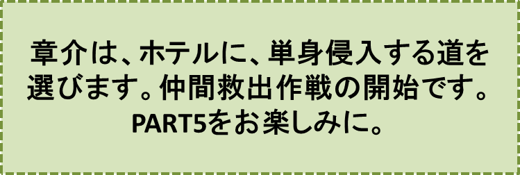

リンゴの木の神様とその弟子達-PART4-
『追跡』の巻
笠原正雄
立札作業の現場には、章介、明、オサムそして小学五年生の雄二の姿は、見当たりませんでした。
少年の姿が丘の向うにすっかり消えてしまうと、四人はこっそりリンゴ並木を離れ少年の跡を追いかけ始めたのです。
足の早い章介は先頭に立ってどんどん走ります。
“リンゴの木の神様がお取りになった？ そんな話に僕達四人はごまかされない。きっとあの子が真犯人を知っているに違いない。とにかく少年の居場所を知っておこう”
章介、明、オサム、雄二の共通の思いです。
四人は、走って走ってようやく少年の後姿をしっかりと視線にとらえました。もう安心です。気付かれないよう用心をしながら、足を進めます。
しかし、前の方を歩いていく少年が、大きな坂道を離れて、少し薄暗くなった細い道を歩み始めた途端、後を追う四人の顔に大きな不安の色が浮かびました。どうしてでしょう。
この薄暗い木立で囲まれた細い道を通り抜けると、赤、白、黄色さまざまな花が咲き誇っている広―い原っぱがあります。この原っぱの向うに、常緑の木々達で囲まれた白亜の豪華なホテルが立っていますが、町の子供達はこのホテルをとても恐れており、章介達も例外ではないからです。
にも拘わらず見知らぬ少年は、このホテルに向かって何の迷いもなくスタスタ歩いていきます。
“どうしてこんなホテルに？”
章介達にとっては大きな驚きです。
そしてあゝ、遂に少年は何のためらいの様子もなく、正面玄関からホテルの中へと消えていったのです！
子供達がこんなにまでこのホテルを恐れる理由、一体どこにあるのでしょう。
町の大人達にとってこのホテルは、夏は避暑客で一杯になり冬はスキー客で賑わっている、ごく普通の観光ホテルに過ぎません。
にも拘わらず、子供達がこのホテルをとても恐れているのは何故でしょう。
宿泊客がくるまでホテルに到着する度に、黒縁のロイド眼鏡を掛けたがっちりした体格の男がとても低く頭を下げて出迎え、重い荷物なども両肩に軽々と背負って、望みの部屋に案内してくれます。
ですから、どのように注意深くこのホテルを観察してみても、子供達が大きな不安を抱き青ざめながらホテルに近づいていく理由を、探すことは出来ないでしょう。
森の中の何百年も前に建てられて、今にも壊れそうな古い旅館にありそうな幽霊のお話も、この丘の上に建っているモダンな白亜の建物には似合いそうもありません。
では、どうしてでしょう？
この理由はあの黒縁眼鏡のフロントの男にあるのです！！
もし宿泊客達がこんな話を耳にしましたら、
“えっ、あのフロントの男がどうして！？”
とびっくりすることでしょう。そして、フロントに駆けつけてもう一度その顔をゆっくり見直してみよう、と思うでしょう。
……残念ながらフロントの男は駆けつけてくる宿泊客達に、一瞬早くにこやかな笑顔を作って
「とてもお急ぎのようですね。ご用件は何でございましょうか」
と丁寧な口調で尋ねるでしょう。
こんな具合ですから宿泊客の皆さんは、どうしてこの男が子供達に恐れられているのだろう不思議なことだと、首をかしげるに違いありません。
しかし、このフロントの男がのんびりたばこを燻（くゆ）らしながら、ホテルの受付に座っていたときなどに、ホテルの前に広がる芝生そして木立の中で遊ぶ子供たちの姿に気付いたりしたら、全くの別人に変わってしまうことに、町の人達そしてホテルの宿泊客も気づいていないでしょう。
町の大人達宿泊客が見ていないことを、十分用心深く確かめた上で、フロントの男は小走りに子供達に近づき
“どうしてこんな所ばかりで遊ぶんだ！ せっかくの景色が台無しになってしまうじゃないか！”
“このホテルは静かな丘の上のホテルとして広く知られているんだ。町の人達もこのホテルを誇りにしているんだぞ”
“早く失せろ！ さぁ、十（とお）数える間にとっとと失せてしまえ！”
と言った内容の厳しい言葉を、興奮で引きつった表情で、矢継ぎ早に投げかけます。
この厳しい怒声まじりの言葉にも拘わらず子供達が遊ぶのを止めなければ、まるで背中に翼が生えたように追っかけてきて、子供達を手あたり次第に捕まえ、この物語に詳しく記すことを憚(はばか)る程厳しくその子供を懲らしめることでしょう。
ほんの少し前のことでしたがある子供が
“フロントの男に追っかけられた時、確かに彼の背中に化けものコウモリのような黒い翼が生えていて、生きた心地が全くしなかった。本当に怖かったよ”
と涙ながらに訴えました。
この子供の話は今では子供達の間で強く信じられ語りつがれています。そしてそれ以来、子供達はフロントの男のことを時に、“化けものコウモリ”と呼んだりしているのです。
しかし子供達が日頃、フロントの男を時折り“化けものコウモリ”とまで呼んでいるそんな恐ろしい姿を、宿泊客や町の大人達が想像することは無理なことでしょう。
章介は立ち止まり小さな声で明達にささやきました。
「リンゴ泥棒にとって、このホテルは都合のいい隠れ家さ。だって町の人達は立派な観光ホテルだと思っているし、ボク達は、フロントの男いや化けものコウモリが怖くて近づかないものね」
たちまち明、オサム、雄二の三人も
「そうだよ。その通りだ。ボク達もそう思う」
と何度もうなずき、声をそろえての返事を返します。
章介は、三人の返事に“ボクは名探偵なんだ”と自信満々です。誇らしげに胸を張って、
“あの見知らぬ不思議な少年こそリンゴ泥棒の一味に違いない”
といった内容の言葉を付け足しました。
章介の提案で、
“四人のうち一人はここに留（とど）まって、残る三人がホテルの中に忍び込み、もしその三人の帰りが遅くなったら町の人達に連絡に走ること”
という約束を取り交わしました。
章介にとって見張り役は望むところではありません。先頭に立ってホテルに忍び込みたかったのです。
しかしジャンケンを一度では足らず三度までやったのでしたが、三度とも負け見張り役を引き受けざるを得なくなりました。
三人が、フロントの男に気付かれないよう細心の注意を払って、無事ホテル内に忍び込むのを見届けると、章介は、子供達が”巨人岩”と呼んでいる大きな石の影の先端に目印の小石を置きました。その小石が、巨人岩の影に自分の背丈だけ入り込むまで、待つことにしたのです。
章介は、フロントの男に見つからないよう、気を配りながら、仲間の一人が助けを求めていないか、あるいは、うまくいっている安心し給えというように手を振ってくれないか、不安と期待が入り混じった気持ちで、あちらの窓こちらの窓と忙しく観察していました。ホテルの裏側に回っての観察もしました。しかし、あたりはひっそりとしています。ただスギやヒノキの葉っぱが、初冬の風にサワサワと揺れ動く音ばかりです。
この間に巨人岩の影が章介の背丈の倍ほども延びて、小石をたっぷり飲み込んでいました。
章介は思いっきり背延びをし考え込みました。
“仲間達は、リンゴ泥棒に捕らえられたのかもしれない。仲間を助け出すことこそ自分の役目ではないか、それとも約束通りに町に救いを求めて走ろうか”
と、とても迷ったのでしたが、助けを求めに走ろうという気持ちよりも、いよいよ自分がこの冒険の表舞台に立ったという誇らしい気分の方が、より大きく胸一杯に広がってくるのを覚えました。
“三人がいつまでも帰ってこないのは、リンゴ泥棒達に捕らえられたためかも知れない。あるいはフロントの男、化けものコウモリに見つかってとんでもない目にあわされているのかも知れない”
“よし！ ボクが三人を助けにいく！”
彼は決心し右手を高く掲げ雄たけびを上げてから、ホテルの正面玄関に向かいます。
♪♪♪♪コーヒーブレイク♪♪♪♪
